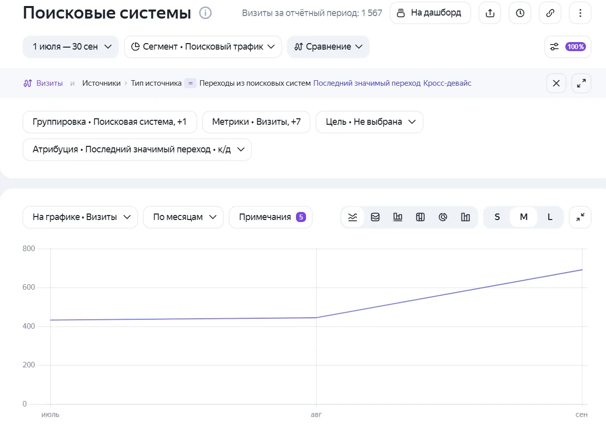

[ SEO-проект · июль - сентябрь 2026 ]
Завод деталей турбин: (+60%)
Что было
Сайт завода, который восстанавливает детали турбин. Веду его с лета 2026.
Что нашла
- Технические ошибки, которые мешали сайту попасть в поиск
- Неудобные места на пути до заявки
- Нехватка информации, которая нужна заказчику для решения: что делают, в какие сроки, как заказать
Что сделала
- Исправила технические ошибки
- Улучшила удобство сайта
- Внедрила коммерческие факторы
Что изменилось для людей
- Путь до заявки стал короче, на страницах появилась нужная заказчику информация
- Каждый месяц отчёт по Метрике и Топвизору: что выросло, что нет и почему
Результат
Проект с лета 2026. Визиты из поиска выросли с 432 в июле до 691 в сентябре, а запрос "ремонт лопаток турбины" поднялся с 17 места на 1.

